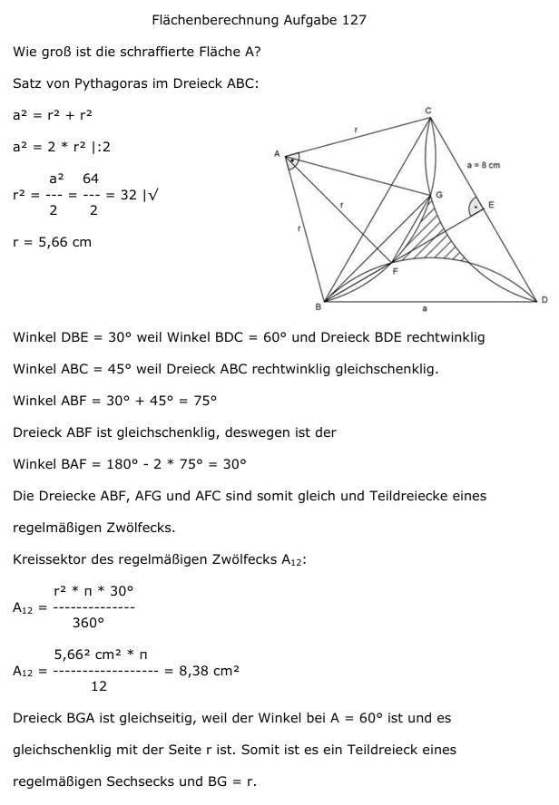

Aufgabe 127
Wie groß ist die schraffierte Fläche A?

Satz von Pythagoras im Dreieck ABC:
a2 = r2 + r2
a2 = 2 * r2 |:2
a2 64
r2 = --- = --- = 32 |√
2 2
r = 5,66 cm
Winkel DBE = 30° weil Winkel BDC = 60° und
Dreieck BDE rechtwinklig
Winkel ABC = 45° weil Dreieck ABC rechtwinklig
gleichschenklig.
Winkel ABF = 30° + 45° = 75°
Dreieck ABF ist gleichschenklig, deswegen ist der
Winkel BAF = 180° - 2 * 75° = 30°
Die Dreiecke ABF, AFG und AFC sind somit gleich
und Teildreiecke eines
regelmäßigen Zwölfecks.
Kreissektor des regelmäßigen Zwölfecks A12:
r2 * π * 30°
A12 = --------------
360°
5,662 cm2 * π
A12 = ------------------ = 8,38 cm2
12
Dreieck BGA ist gleichseitig, weil der Winkel
bei A = 60° ist und es gleichschenklig mit der
Seite r ist. Somit ist es ein Teildreieck eines
regelmäßigen Sechsecks und BG = r.
Satz von Pythagoras im Dreieck BHA:
HA = h
r
BH = ---
2
r r
r2 = (---)2 + h2 | -(---)2
2 2
r2
r2 - --- = h2
4
3 3
h2 = --- r2 = --- * 5,662 = 24 |√
4 4
h = 4,9 cm
Satz von Pythagoras im Dreieck BFH:
BF = s = Zwölfeckseite
r
s2 = (---)2 + (r – h)2
2
r2
s2 = --- + (5,66 – 4,9)2
4
s2 = 8 + 0,58 = 8,58 |√
s = 2,93 cm = Zwölfeckseite
Teildreieck des regelmäßigen Zwölfecks:
Satz von Pythagoras im Dreieck FIA:
s s
r2 = (---)2 + h12 | -(---)2
2 2
s2
h12 = r2 - ----
4
h12 = 32 – 2,15 = 29,85 |√
h1 = 5,46 cm
Fläche ASichel der Sichel FG:
s * h1
ASichel = A12 - ---------
2
2,93 cm*5,46 cm
ASichel = 8,38 cm2 - ----------------- = 0,38 cm2
2
 Satz von Pythagoras im Dreieck FKG:
s s
s2 = (---)2 + h22 | -(---)2
2 2
s2
h22 = s2 - ----
4
3
h22 = --- * 2,932 = 6,44 |√
4
h2 = 2,54 cm
Fläche ADEB des Dreiecks DEB:
s * h2 2,93 cm * 2,54 cm
ADEB = -------- = ------------------- = 3,72 cm2
2 2
schraffierte Fläche:
Aschraffiert = ADEB – 3 * ASichel
Aschraffiert = 3,72 cm2 - 3 * 0,38 cm2 = 2,58 cm2
Satz von Pythagoras im Dreieck FKG:
s s
s2 = (---)2 + h22 | -(---)2
2 2
s2
h22 = s2 - ----
4
3
h22 = --- * 2,932 = 6,44 |√
4
h2 = 2,54 cm
Fläche ADEB des Dreiecks DEB:
s * h2 2,93 cm * 2,54 cm
ADEB = -------- = ------------------- = 3,72 cm2
2 2
schraffierte Fläche:
Aschraffiert = ADEB – 3 * ASichel
Aschraffiert = 3,72 cm2 - 3 * 0,38 cm2 = 2,58 cm2